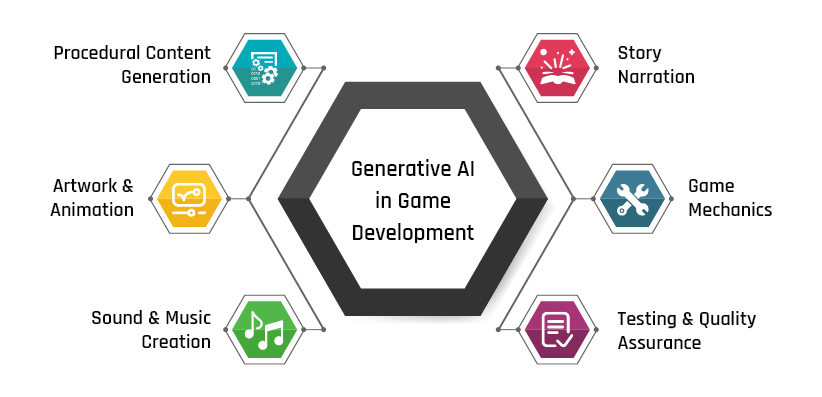

Spieleentwicklung mit KI
Das Erstellen von Spielen mithilfe von Künstlicher Intelligenz (KI) hat die Art und Weise, wie Spieleentwickler arbeiten, revolutioniert. KI ermöglicht es, komplexe Spielwelten zu erschaffen, indem sie automatisch Inhalte generiert, Spielmechaniken optimiert und sogar das Verhalten von Nicht-Spieler-Charakteren (NPCs) anpasst. Diese Technologie kann helfen, repetitive Aufgaben zu automatisieren und Entwicklern mehr Zeit für kreative Aspekte wie Storytelling und Gameplay-Design zu geben.
Durch maschinelles Lernen können Spieleentwickler KI-basierte Modelle trainieren, die Spielern ein personalisiertes Spielerlebnis bieten können, indem sie deren Verhalten und Vorlieben analysieren. Darüber hinaus können KIs verwendet werden, um Spiele automatisch zu testen und Fehler zu finden, bevor sie veröffentlicht werden.
In Zukunft könnte KI noch weiter gehen, indem sie neue Formen des Spielens ermöglicht, wie zum Beispiel dynamische Anpassungen an die Fähigkeiten des Spielers in Echtzeit oder die Schaffung von Inhalten, die sich kontinuierlich an die Entscheidungen und Aktionen der Spieler anpassen. Diese Entwicklungen versprechen, die Spielentwicklung effizienter und innovativer zu gestalten und neue Möglichkeiten für fesselnde Spielerlebnisse zu eröffnen.
Credits: Bryan und Mika
